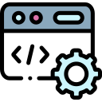

Angie is a full time software engineer based out of San Fransico. She is a Taiwanese American and has worked for eight years across an array of engineering teams. She enjoys firmware development and aims to continuously technically challenge herself.

Angie has worked for Samsara, The Realreal and Span io working on both software and firmware engineering teams. She enjoys shipping new products/features to customers. She has a very nontraditional route into engineering but as a result, can ship quality code because she understand the development cycle from different perspectives.
In her free time, she enjoys running or any outdoor activities. It gives her the opportunity to just get outside and get some fresh air. Recently she completed the San Francisco Half Marathong (1st route) and is currently training for a full marathon.
© 2026 Lin Productions